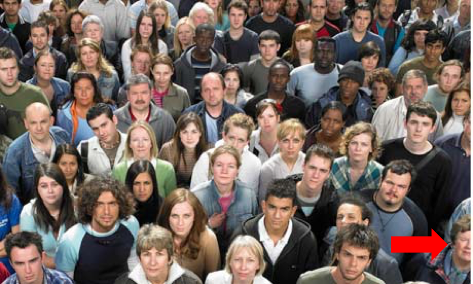
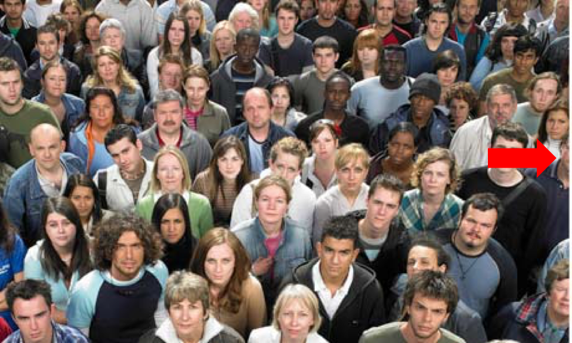

Welcome to CountingPeople!
For this task you are going to be looking at images and determining the number of people in those images
First, you should know who to include in your count:
If at least half of the head, from
any
angle, is contained within the rectangle of the image, then include that person in your count. Do
not
include people
without
any part of their head showing
For example, this man
would
be included in the count, because his head is more than half visible

But this man would
not
be included in the count, because his head is more than half cut off

Click on the person's head to count them. A red dot will appear and the counter below the image will increase.
To undo your count, click the "Undo" button next to the image
Number of people:
0